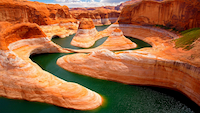

Trevor Thornock
About Me

Hello, My name is Trevor Thornock. I am currently living in American Fork Utah. Something about me is that I love to travel aswell as trying new foods from places around the world. I am excited to gain new skills as I study Wed development and Computer Programming and gain the skills that will aid me in the future.
Utah
Utah is a state known for its diverse landscapes. The northern part of utah is known for being more mountainous and for having great locations for skiing and other winter sports. while the southern part of utah is known for its red rock deserts and is home to many national parks like Zion.